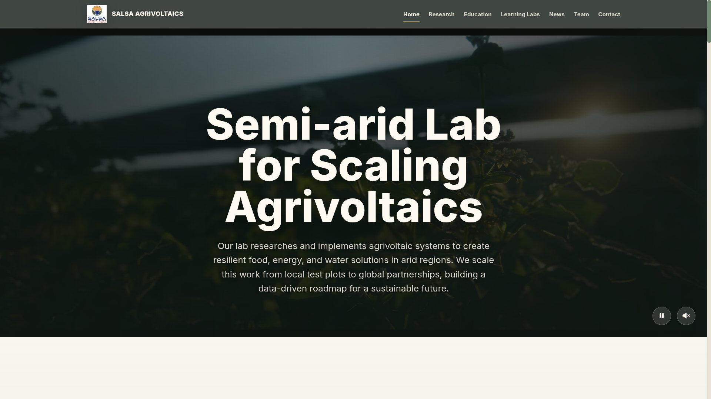
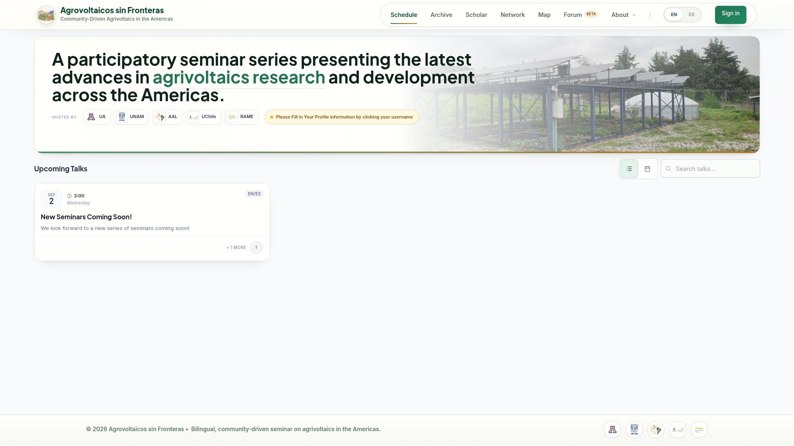
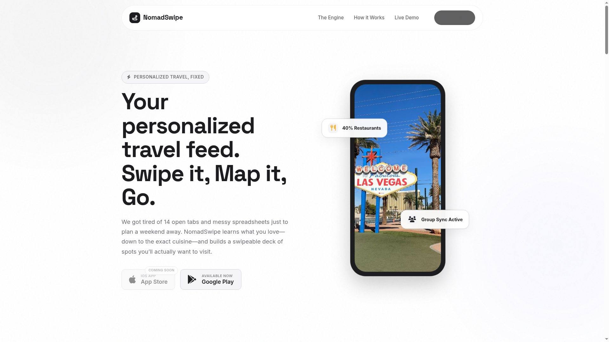

Start with evidence
Good analysis begins with the methodology, data source and limits — especially when environmental claims affect real decisions.
Environmental science, agriculture × carbon markets and research made usable.
The journeyI am an environmental scientist and agricultural specialist with a strong background in policy and economic analysis.
I combine agriculture and emerging technologies with a practical desire to help address the climate crisis. My work has moved from farm-level field research and policy analysis to carbon-market research, stakeholder communication and the development of public-facing data tools.





2007 — 2012 · Santa Barbara
Completed a double major at the University of California, Santa Barbara: a B.S. in Earth Science with an Earth Systems emphasis and a B.S. in Environmental Studies.
2019 · Myanmar
Conducted quantitative and qualitative research with 39 aquaculture farmers and industry informants in Myanmar's Central Dry Zone. I organized the fieldwork across multiple partners and used household data for financial, cost-benefit and investment analyses.
2019 · Hamburg
Researched and co-wrote 12 of the 26 policies evaluated for the 2019 Future Policy Award in partnership with the Inter-Parliamentary Union and UNDP. The work included expert interviews, public communication and a paper on agroecology and digitization.
2020 — 2022 · Moscow
At the Higher School of Economics, produced analytical reports and guidance for policymakers on emissions markets, carbon pricing, carbon farming, agricultural technology and transport infrastructure.
2023 — Present · Remote
Lead the full lifecycle of a carbon-offset web application: product direction, Python and JavaScript development, complex dataset management, interactive visualization, maintenance and communication with external stakeholders.
2024 — 2026 · Tucson
Designed and managed carbon-market research, assessed Biosphere 2 as a testbed for carbon methodologies, and translated technical findings for researchers and stakeholders. I also built salsav.org and avsinfronteras.org to extend the reach of agrivoltaics research.
September 2025 — Present · Remote
Founded an ongoing travel-planning product built in React Native. I handle the complete product: strategy, interface design, mobile development, backend systems, recommendation logic, maps, testing, releases and maintenance.
Working on climate, agriculture or carbon?